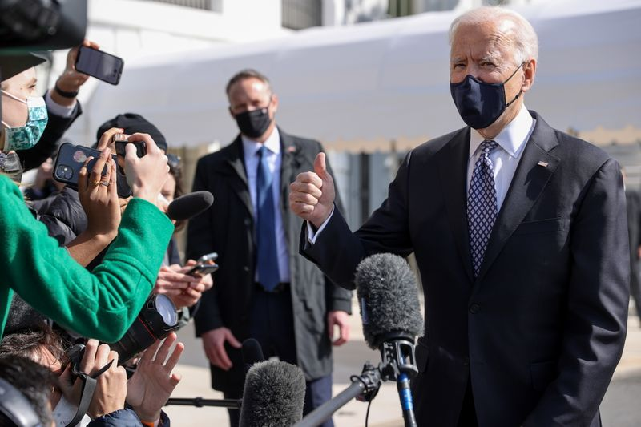

Biden to meet Putin ‘when the time is right’: White House
ON BOARD AIR FORCE ONE (Reuters) – U.S. President Joe Biden, who said earlier this week he thought Vladimir Putin was a killer, will meet with the Russian leader 'when the time is right,' the White House said on Friday.
'He’s not going to back off,' White House spokeswoman Karine Jean-Pierre told reporters.'He’s going to be very frank and very open about that relationship.'
On Thursday, Putin said he and Biden should hold live online talks in the coming days.
'The president will meet with President Putin when the time is right,' Jeanne-Pierre said.'President Biden and President Putin have different perspectives of their respective countries, but where they agree is that we should continue to look for ways to work together where it is in our mutual interest.'
(Reporting by Trevor Hunnicutt; Writing by Tim Ahmann; Editing by Dan Grebler)
Posted On: 2021-03-19T00:00:00

Content Date: 2021-03-19
Download Date: 2021-04-16
Document ID: L0C04A2LP